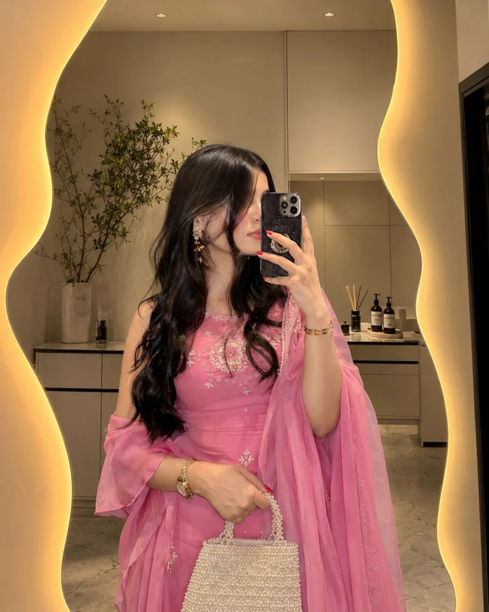
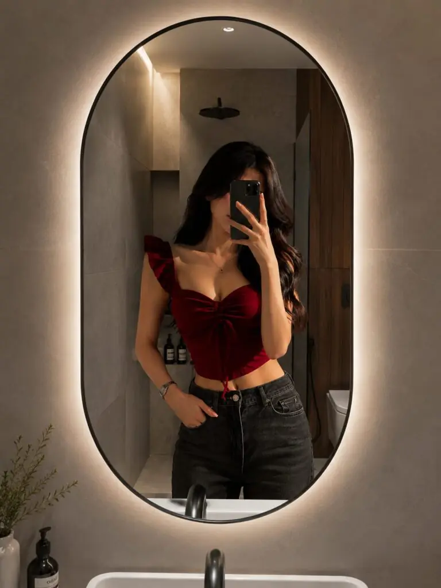

Mirror selfie photos are one of the biggest trends on Instagram and Pinterest right now. Boys and girls love aesthetic mirror selfies because they look stylish, natural, and eye-catching. With the right lighting, pose, and background, anyone can create a luxury influencer-style photo using just a smartphone.
Trending aesthetic mirror selfie prompts help people create cinematic and high-quality images with AI tools or photo editing apps. From warm LED mirrors to modern minimalist rooms, these prompts make photos look professional and viral-ready. In this article, you will discover the best aesthetic mirror selfie prompt ideas for both boys and girls.
In this article, you will explore trending aesthetic mirror selfie photo prompts for boys and girls that are simple, stylish, and viral-worthy. These prompts are designed to create realistic fashion portraits with beautiful lighting, elegant backgrounds, and professional photography looks that stand out on social media.
Want more awesome prompts?
Join our community and get the latest viral prompts daily.
BOYS PROMPT↓Ultra-realistic mirror selfie of a fashionable young man in a luxury contemporary dressing room. Large irregular organic-shaped mirror with integrated warm LED backlighting, soft golden glow around the frame. Modern minimalist styling. Textured concrete walls, dark wood accents, decorative indoor plant, premium bathroom decor, warm ambient lighting. Realistic skin details, natural reflections, shallow depth of field, cinematic color grading, luxury lifestyle photography, fashion campaign quality, soft highlights, elegant composition, photorealistic, HDR, 85mm lens, f/1.8, ultra-detailed, Instagram fashion influencer aesthetic, luxury interior design, 4K, masterpiece, high-end editorial photography. --ar 4:5

For Girls
? AI PROMPT
GIRL PROMPT↓
Beautiful young woman taking a mirror selfie in a modern minimalist dressing room. Standing in front of an artistic asymmetrical wavy mirror with warm LED backlighting creating a soft golden glow around the edges. Cozy luxury interior, cream-colored walls, modern cabinetry, decorative plant and bathroom accessories visible. Soft warm lighting, aesthetic fashion photography, high detail embroidery, realistic skin texture, shallow depth of field, ultra-realistic, 4K, cinematic portrait, Instagram fashion influencer style, elegant and sophisticated atmosphere. 4:5 aspect ratio

? AI PROMPT
Analyze both uploaded images automatically: IMAGE
is the source selfie/photo and IMAGE 2 is the destination empty mirror. Replace the reflection inside the destination mirror with the person from IMAGE 1 while maintaining strict identity preservation.
Preserve the person's face 100% exactly as in the source image, including facial structure, eyes, nose, lips, jawline, skin texture, hairstyle, age, body shape, expression, ethnicity, and overall identity. Do not apply beautification, face enhancement, Al face recreation, face swapping, or any facial modifications, and maintain the exact real-person likeness.
Automatically detect the shape, size, angle, curvature, perspective, and position of the destination mirror, then place the person naturally inside the mirror reflection as if they were originally standing in front of it. If necessary, intelligently adjust body angle, camera perspective, crop, framing, distance, or pose alignment only to fit the mirror realistically, without distorting the face or body. The process should work with any selfie, portrait, mirror selfie, standing pose, sitting pose, indoor photo, outdoor photo, or full-body image, and with any mirror shape including arched, round, oval, irregular, designer, wall-mounted, floor, or luxury mirrors.
Automatically scale and reposition the
Aesthetic mirror selfies are more than just trendy pictures — they are a creative way to express fashion, personality, and style. With the help of detailed AI photo prompts, anyone can create stunning mirror selfies that look professionally shot. From warm cinematic lighting to modern luxury interiors, every small detail helps make the photo more attractive.
Boys and girls can experiment with different outfits, poses, mirrors, and lighting styles to create their own unique aesthetic look. Whether you prefer cozy soft tones or bold luxury vibes, using the right prompt can make your photos look more realistic and eye-catching in just seconds.
As social media trends continue to grow, aesthetic mirror selfie photography remains one of the best ways to create viral and stylish content. Try these trending prompts, explore new creative ideas, and turn ordinary selfies into high-quality fashion portraits that truly stand out online.